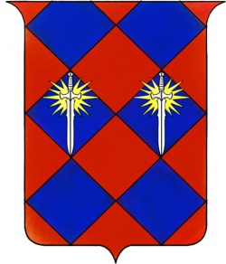

Sessione 003 — La Fenice Non Muore Mai
C’è chi dice che gli dèi non intervengano mai direttamente. Chi era presente in quella caverna quella notte non lo dirà mai più.
Dettagli sessione
| Data in-game | 16 Agosto 4713 |
| Giocata il | 10 Aprile 2026 |
| Luogo | Caverne Sotterranee di Kenabres |
| Livello party | 2 |
Cosa è successo
Situazione iniziale
La sessione riprende esattamente dove la precedente si era interrotta: il combattimento contro le creature tentacolari (Darkmantle) appena concluso. Il pavimento della caverna è disseminato di corpi. In piedi rimangono solo Vlamyra e Tamar.
Agira non respira più. Caslek è incosciente ma stabile. Spark è a terra, viva a malapena.
La resurrezione di Agira
Tamar stabilizza Spark con una prova di medicina, poi si avvicina ad Agira. Nessun polso. Nessun respiro. Ma il petto di Agira è innaturalmente caldo — una calore che non appartiene a un cadavere in una caverna fredda.
Tamar poggia il suo simbolo sacro sul petto di Agira e inizia a pregare in celestiale, chiedendo a Sarenrae di non abbandonare il suo fedele. Il simbolo inizia a scaldarsi — poi a bruciare, incandescente, fino a non poter più essere toccato. Il corpo di Agira si illumina, la pelle si scurisce fino a sembrare bronzo, le fiamme avvolgono il terreno attorno a lui.
Da una colonna di fuoco che raggiunge il soffitto della caverna, una figura si delinea: Sarenrae in persona. Alta tre metri, pelle di bronzo fuso, capelli fatti di fiamme vive. Cammina nel fuoco senza soffrire. Le vesti tessute di luce.
Si china sul luogo dove giaceva Agira e pronuncia le parole della resurrezione:
“Ascolta, cenere che fosti carne. Ascolta, silenzio che fosti respiro. Io sono l’aurora che non tradisce e la fiamma che ricorda il nome di ogni suo figlio. Agira, la cui luce è stata nascosta nell’ombra della fine, io ti chiamo indietro, perché il tuo fuoco non ha ancora finito di ardere. Rinasci. Dalle ceneri del dolore e dalle braccia della promessa sorgi, Agira. La Fenice non muore mai.”
Le ceneri vorticano. Il corpo si ricompone. Agira riapre gli occhi, si rialza urlando a squarciagola con le mani in fiamme — “Il fuoco divampa ancora in me!” — e cerca immediatamente i suoi nemici.
La dea raccoglie il simbolo di Tamar dalla cenere: da argento, è diventato oro. Lo porge a Tamar con un sorriso. Poi scompare, come una fiamma che si spegne.
Horgus rivela la sua identità
Ripreso fiato, Horgus si alza, si toglie l’anello con sigillo nobiliare e lo mostra al gruppo. Sullo stemma: uno scudo con rombi, una spada con un sole al posto dell’elsa — il simbolo araldico della nazione di Mendev.

“Io sono Horgus Gwerm. Sono discendente del nobile Casato Gwerm. È troppo presto perché la mia vita si spenga — ho molto da fare, soprattutto con questi demoni in giro. Portatemi fuori e sono disposto a offrirvi mille pezzi d’oro, pagati sull’unghia.”
Il gruppo accetta. Horgus aggiunge che il pagamento avverrà alla sua magione, a cui fornirà le indicazioni una volta in superficie.
Riposo breve e rivelazioni
Durante il riposo breve, alcune conversazioni importanti.
Aravashnial rivela come ha perso la vista: era in prima fila davanti al Prelato quando è iniziato l’attacco. Il Signore della Tempesta impugnava una spada in una mano e una frusta di fulmini nell’altra. Il fulmine lo ha colpito al volto — bruciature orizzontali che passano da un orecchio all’altro, ancora visibili. Non un incidente: ha cercato di proteggersi con una barriera magica, ma non è bastato. “Ero lì. Ero in prima fila.” Aggiunge che, se il gruppo lo porterà fuori, promette di lasciare loro delle pergamene dalla sua biblioteca.
Anevia, durante il riposo, stringe qualcosa sotto la maglia — un ciondolo. È visibilmente in ansia per Irabeth, sua moglie. A Caslek — che le dice di non preoccuparsi — risponde: “Se fosse in pericolo e io non fossi lì per aiutarla… sono bloccata qui.”
Horgus e Aravashnial intanto si ritrovano a parlare fianco a fianco delle incisioni sulle pareti: un accademico che ha trovato finalmente il suo pari. Orgus si muove nel discorso come un esperto — quasi alla stregua di Aravashnial stesso — parlando della civiltà sotterranea che chiama “ibridati” e citando più volte un nome proprio: Neatolm (o Neatholm).
Il nano mago folle
Riprendendo il cammino attraverso un condotto stretto che porta in una nuova caverna, il gruppo trova un accampamento con fuoco da campo. Una figura di piccole dimensioni con i bordi sfocati — quasi invisibile — urla nella lingua comune e in un’altra lingua sconosciuta, poi lancia un raggio di energia verde contro il gruppo.
Il gruppo prova più volte il dialogo: niente. La creatura è chiaramente in preda a una paranoia totale, convinta di essere braccata. Insulta la dea di Vlamyra — “Siete bugiardi, bugiardi voi, come è bugiarda la vostra dea!” — e la presenza di una tiefling scatena ulteriore furia.
Alla fine Vlamyra lo abbatte con un attacco non letale alle spalle. La concentrazione si spezza: davanti a loro c’è un nano delle rocce comune, sporco, con abiti logori e l’aria di chi ha passato molto tempo sottoterra.
Attorno al fuoco: un giaciglio cencioso, uno zaino, una statuetta di marmo scheggiata (raffigurante un umanoide che scaglia una lancia — il suo focus arcano). Il nano porta alla cintura un libro di incantesimi in lingua arcana e, nello zaino, un tomo in cuoio con decorazioni metalliche rosse scritto in Abissale. Addosso: una pergamena di Protezione dall’Energia, una pergamena di Shocking Grasp, una pozione di guarigione, una pozione di invisibilità. E indosso, un Mantello della Resistenza con parti d’argento cucite nella stoffa.
Aravashnial tocca le cicatrici sul polso del nano e capisce: sono simboli simili ai bracciali di Caslek. “È un fuggitivo. Era un prigioniero. L’ho visto solo un’altra volta — era stato imprigionato dalla Regina Galfrey stessa.”
Il tomo in abissale viene buttato nel fuoco da Caslek — arde di fiamme rosse intense, l’inchiostro diventa color sangue.
Dopo un lungo dibattito sulla sorte del nano (ancora inconscio), è Anevia a decidere: “Siamo di fronte a un uomo blasfemo. Non possiamo permetterci di risparmiare adoratori di demoni.” Gli recide la gola con gesto rapido e sicuro — non la prima volta per lei, ne è evidente. Agira compone il corpo con rispetto.
Nota: il nano aveva paura dei Darkmantle della sessione precedente perché li usava per riprodursi — e poi mangiava i loro cuccioli.
Incontro con gli ibridati
La galleria sale con forte pendenza verso nord (18 metri quasi verticali, con chiodi e appigli antichi già installati). Dopo la scalata, una grande caverna circolare — 21 metri di diametro, formazioni cilindriche che formano una cupola, pareti venate di crepe. Al centro: i resti di una torre di pietra crollata.
Voci. Tre figure affaccendate a spostare macerie, che chiamano a gran voce un certo Crell.
Avvicinandosi, una delle figure si gira: è Lann, alto e sottile, con i tratti di un attraente elfo maschio fusi con quelli di una capra e di un lucertoloide. Dita dimensionate che terminano in artigli smussati. Parla la lingua comune con uno strano accento.

Con lui ci sono Dira — donna con il viso deformato da tumori, incapace di parlare in modo comprensibile — e Crell, rimasto intrappolato sotto il masso che si è spostato durante il crollo. Crell è ferito gravemente, quasi in fin di vita.
Il gruppo aiuta a spostare la roccia. Con fatica e una prova difficile, riescono a far strisciare fuori Crell, che ha una gamba e parte del torso schiacciati.
Lann si presenta formalmente: “Il mio nome è Lann. I miei compagni sono Crell e Dira. Veniamo dal villaggio vicino — non so se ne avete sentito parlare, né a Neatholm. La frana ci ha presi alla sprovvista. Avevamo creato un piccolo posto qui per tenere d’occhio la situazione, ma il terreno è franato, la torre è crollata. Dobbiamo tornare al villaggio. Forse volete venire con noi?”
Proposta: cibo, ristoro, informazioni su cosa succede in superficie.
Lann menziona un’altra tribù di ibridati a sud-est — più violenta — che ha stretto alleanza con alcuni umani in superficie. Questi umani portano l’armatura con l’icona di una dea e un falcione. Questo dettaglio disturba sia Agira che Kaelen: i paladini di Iomedae non usano falcioni, usano spade.
Il confronto tra Spark e Horgus
Horgus non si fida degli ibridati e lo fa sapere a tutti. È Spark a fargli notare che non ci sono alternative: seguire Lann verso Neatholm è l’opzione meno peggio — meglio di rischiare di imbattersi nell’altra tribù, quella violenta a sud-est. Horgus ci pensa, poi cede — ma non senza un ultimo colpo di coda rivolto a Spark:
“Ti devo dare ragione, Tifling.”
Spark si gira: “Se mi chiami Tifling un’altra volta ti trovo un pugno sui denti.” Horgus risponde alzando un sopracciglio — “Che cosa saresti allora?”, a cui Spark risponde “Un abitante di Kenabres come tutti gli altri? Ho un nome sai?”, lui lo scandisce lentamente, con tutto il disprezzo aristocratico che riesce a mettere in una parola: “Va bene, abitante di Kenabes..”
Spark va muso a muso con lui:
“Se continui con questo atteggiamento le monete d’oro te le puoi filare nel culo e arrangiarti a uscire da questo posto, hai capito?”
Horgus non arretra di un millimetro. Risponde freddo, minaccia per minaccia:
“Buona fortuna a lavorare quando verranno a scoprire che mi avete lasciato morire. Buona fortuna a restare nella tua gilda. Buona fortuna a commerciare. Buona fortuna a lavorare con chiunque in questa città.”
E poi, dopo una pausa: “Forse una volta uscito da qui, dovrei spiegare alla regina Galfrey che tipo di persone siete? Come vi siete comportati con il nobile Horgus?”
Vlamyra interviene a placare Spark — le si avvicina, la invita a lasciar perdere e ad andare avanti con gli altri. Poi si rivolge a Horgus con tono fermo: il comportamento di Horgus influenza l’umore del gruppo, e l’umore del gruppo influenza le loro scelte. Horgus capisce il sottotesto e abbassa (di pochissimo) i toni.
La passeggiata con Caslek
Mentre il gruppo si rimette in marcia, Horgus si mette a camminare di fianco a Caslek. Conversazione apparentemente leggera, ma con un sottofondo inquietante.
Horgus dice di essere sicuro di aver già incontrato il Tabaxi. Caslek risponde che non si sono mai incontrati e che i membri della sua razza tendono ad assomigliarsi. Horgus allora menziona, quasi distrattamente, di aver già avuto il “dispiacere” di incontrare un tabaxi in passato — “un gatto randagio e bastardo” — che era stato “condonato a morte”. E aggiunge, con quella sua calma sgradevole: “Immagino doveva aver rubato un tesoro veramente prezioso per meritarsi la pena di morte. O fatto anche di peggio.”
Il messaggio non è velato: sa come funzionano certe cose. Sa a chi rivolgersi.
Come è finita
Il gruppo segue Lann in direzione sud-ovest per circa 25 minuti. Il tunnel si restringe, poi si apre su un ostacolo inaspettato: un ampio baratro spacca il pavimento della galleria. La polvere di roccia è ancora sospesa nell’aria — la fenditura è recente, probabilmente causata dal crollo che ha distrutto la torre. Le pareti gemono mentre si assestano.
Lann, Crell e Dira si fermano, sgomenti. Anche loro non se lo aspettavano.
La sessione si chiude qui — davanti al baratro, con il cammino verso Neatholm interrotto.
La prospettiva del gruppo
Una sessione di quelle che non si dimenticano. La resurrezione di Agira ha cambiato il modo in cui il gruppo vede la propria missione: non sono sopravvissuti qualunque. Hanno visto la loro dea. Poi: il nano folle, una decisione morale difficile, il primo contatto con i discendenti dei crociati. E infine la tensione esplosiva tra Spark e Horgus, con Horgus che ha mostrato quanto possa essere pericoloso non come combattente, ma come nobile con connessioni alla corona.
Decisioni prese
- Accettare la proposta di Horgus/Horgus Gwerm per 1000 gp.
- Uccidere il nano mago folle (decisione presa da Anevia, accettata dalla maggioranza).
- Bruciare il tomo abissale.
- Seguire Lann verso Neatholm.
- Nascondere i simboli religiosi prima di incontrare potenziali ibridati violenti.
- Non rispondere alle provocazioni di Horgus con la violenza (Vlamyra ha tenuto Spark a bada).
Cosa abbiamo scoperto
- Sarenrae può manifestarsi fisicamente — e l’ha fatto.
- Horgus è in realtà un nobile del Mendev, discendente del Casato Gwerm.
- Aravashnial ha perso la vista per la frusta del Signore della Tempesta.
- Esiste una tribù di ibridati chiamata Neatholm.
- Esiste un’altra tribù più violenta, alleata con falsi (?) paladini di Iomedae.
- Il nano folle era un prigioniero evaso, condannato dalla Regina Galfrey.
- Le cicatrici sul suo polso sono simili ai bracciali di Caslek.
PNG incontrati
| PNG | Prima volta? | Impressione |
|---|---|---|
| Horgus Gwerm | No | Si è rivelato: nobile del Mendev, Casato Gwerm |
| Aravashnial | No | Ha spiegato la cecità; si è rivelato erudito come Horgus |
| Anevia Tirabade | No | Ha ucciso il nano senza esitare — e non è la prima volta |
| Lann | Sì | Ibridato di Neatholm, porta i tratti di elfo/capra/lucertola |
| Crell | Sì | Ibridato ferito gravemente, appena liberato dal masso |
| Dira | Sì | Ibridata con viso deformato, non parla comprensibilmente |
Luoghi visitati
- Caverne Sotterranee di Kenabres — grande caverna con colonna crollata
Missioni e agganci
| Missione | Stato | Note |
|---|---|---|
| Risalire in Superficie | Aggiornata | Lann offre un percorso alternativo verso Neatholm |
| Scorta di Horgus Gwerm | Iniziata | 1000 gp alla magione di Horgus |
Bottino e ricompense
| Oggetto | Chi ce l’ha | Note |
|---|---|---|
| Mantello della Resistenza | Caslek Makiya | +1 ai tiri salvezza (ex del nano mago) |
| Pergamena di Protezione dall’Energia | Gruppo | Dal nano mago |
| Pergamena di Shocking Grasp | Gruppo | Dal nano mago |
| Pozione di Guarigione | Agira | Dal nano mago |
| Pozione di Invisibilità | Gruppo | Dal nano mago |
| Libro di incantesimi del nano | Gruppo | Lingua arcana sconosciuta — tenuto per analisi |
| Ankh di Tamar (ora in oro) | Tamar Darkmane | Consegnato da Sarenrae dopo la resurrezione |
Indizi e domande aperte
- Chi erano i “paladini di Iomedae con il falcione” che frequentano la tribù violenta a sud-est?
- Cosa sono i bracciali di Caslek e perché il nano aveva le stesse cicatrici?
- Perché il nano era stato condannato dalla Regina Galfrey? Cosa sa di cui avevamo bisogno?
- Cosa vuole Horgus davvero — perché conosce così bene la storia degli ibridati?
- Cos’è Neatholm e chi è il capo della tribù?
- Horgus conosce un tabaxi condannato a morte — chi era? C’è un collegamento con Caslek?
- Horgus ha connessioni dirette con la regina Galfrey: quanto può essere pericoloso fuori dalle caverne?
Prossima sessione
- Arrivare a Neatholm con Lann, Crell e Dira
- Capire chi sono gli umani con l’armatura di Iomedae e il falcione
- Curare Crell e Anevia se possibile
- Analizzare il libro di incantesimi del nano folle
Riassunto per la sessione successiva
Leggere qui prima di iniziare la prossima sessione.
Dove siamo
Nelle caverne sotterranee sotto Kenabres, in un tunnel a sud-ovest della torre crollata. Davanti a noi c’è un baratro recente che sbarra il percorso verso Neatholm. È tarda sera del 16 agosto 4713.
Con chi siamo
Il gruppo completo più Horgus, Aravashnial e Anevia. In aggiunta, Lann, Crell (ferito gravemente) e Dira.
Cosa dobbiamo fare
Superare o aggirare il baratro. Raggiungere Neatholm con Lann, Crell e Dira.
Tensioni aperte
- Horgus ha minacciato Spark di riferire alla regina Galfrey. La tensione con lui è aperta.
- Horgus ha allusivamente menzionato un tabaxi condannato a morte a Caslek — messaggio ricevuto.
- Caslek ha nascosto di prendere l’anello d’oro e altri oggetti.
- Il nano mago è stato ucciso — alcuni lo hanno accettato, altri no.
- I falsi paladini di Iomedae a sud-est.
- Il baratro sbarrava il percorso — anche Lann era sorpreso: non se lo aspettava.
Non dimenticare
- Il simbolo sacro di Tamar è ora in oro (dono di Sarenrae).
- Aravashnial promette pergamene se portato in superficie.
- Horgus promette 1000 gp alla sua magione.